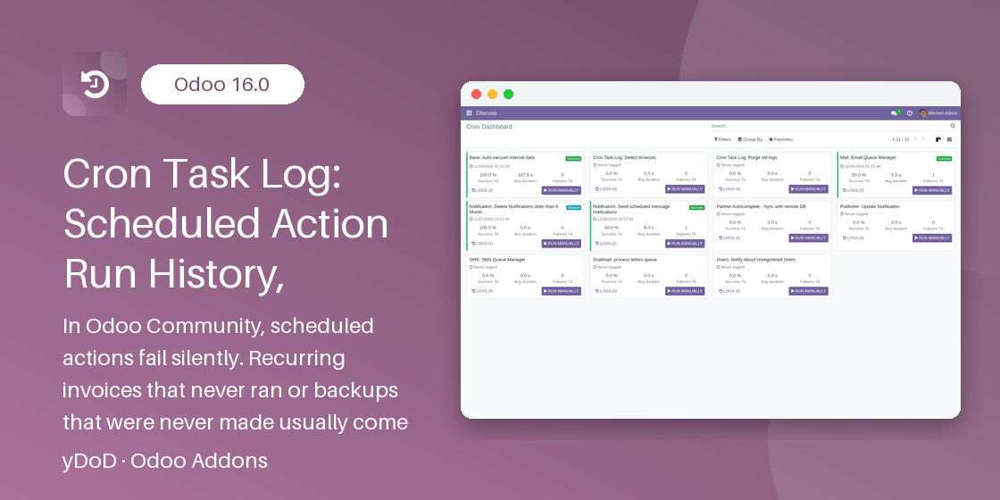

Related Modules
Work even better together with yDoD apps for Odoo 17.0.
yDoD · TOOLS / ADMINISTRATION
Odoo 17.0 Community & Enterprise · depends only on base, web and mail · LGPL-3

In Odoo Community, scheduled actions fail silently. Recurring invoices that never ran, currency rates that were never updated or backups that were never made usually come to light only when a user complains. The only trace is a line in the server log, which administrators cannot read from the backend and which is rotated away after a few days.
Cron Task Log records every ir.cron execution — started by the scheduler, by the
Run Manually button or by _trigger() — in a dedicated log with status, duration,
full traceback and records processed. A kanban dashboard shows the health of every job, failures can be
posted to a Discuss channel and re-run from the log line, and old logs are purged automatically.
Scheduler runs, _trigger() calls and the Run Manually button are all recorded the same way.
Logs are written on a separate cursor, so a failed job still leaves its traceback.
One card per job with last run, 7-day success rate, average duration and a red stripe on failure.
Run a failed or timed-out job again from its log line; the new run is linked to the original.
Failures and timeouts are posted to the channel you choose, with a link to the log.
Runs of workers killed by limit_time_real are turned into Timeout automatically.
Your cron code reports records processed, adds notes or marks the run as skipped.
Daily purge with separate retention for successful and failed runs, plus per-job overrides.
Each run creates a Cron Task Log entry under Settings → Technical → Automation → Cron Task Logs.
ir.logging.The module hooks ir.cron._callback, which every scheduler and _trigger() run goes through, as well as the
Run Manually button (method_direct_trigger), and writes the log through a separate database cursor. When the job raises an error and its own transaction is rolled back, the Failed status and the
traceback are still committed. Logging adds only two small commits per run and never writes on the ir.cron row, so it
does not cause lock conflicts with the scheduler.
Open Settings → Technical → Automation → Cron Dashboard to see one kanban card per Scheduled Action with the last run time and status badge, the Success 7d rate, the Avg duration, the number of Failures 7d, and the Logs and Run Manually buttons. The card stripe turns red when the last run failed and green when it succeeded. Statistics for all cards are computed with two grouped queries, so the dashboard stays fast with hundreds of jobs.
ydod_base_cron_task_log.timeout_minutes, default 60) to Timeout, then sends alerts.ydod_base_cron_task_log.success_retention_days (30) and failed or timed-out logs older than
ydod_base_cron_task_log.failed_retention_days (90). Per-job overrides win; running logs are never deleted.Inside any cron method, report progress with one line:
self.env['cron.task.log'].log_progress(processed=len(invoices), message="Invoices generated") self.env['cron.task.log'].log_progress(skipped=True) # nothing to do today
processed is added to Records Processed, message is appended to the Message tab and skipped ends the run as Skipped. Outside a logged run the call simply returns False.
base.group_system) see the logs and the dashboard.ydod_base_cron_task_log.).No. Every Scheduled Action is logged as soon as the module is installed. Calling log_progress() is optional and only adds record counts and notes.
Only Settings administrators (base.group_system) can read and delete logs, re-run jobs and configure logging. Internal users see neither the menus nor the logs.
Yes. Each log stores the company the job ran as, and a record rule shows administrators only the logs of the companies they are allowed to access. You can group logs by company.
No. The daily purge job removes old entries using the retention periods (30 days for successful runs, 90 for failed runs by default, overridable per job), and you can turn logging off for very frequent jobs.
No. It depends only on base, web and mail, uses only Python's standard library and works on Odoo 17.0 Community and Enterprise.
The log table, the two maintenance jobs and the extra fields on Scheduled Actions are removed. Your scheduled actions keep running exactly as before.
Questions, bug reports or a custom feature such as e-mail alerts, extra dashboard metrics or integration with your own monitoring? Contact yDoD — Dody Ahmad Kusuma Jaya.
yDoD · Odoo apps by Dody Ahmad Kusuma Jaya
Work even better together with yDoD apps for Odoo 17.0.